대표적인 관절질환
관절염, 퇴행성 디스크, 골다공증이 흔히 보는 관절질환이고,
이런 질환은 통증을 일으키고 몸을 움직이기 어렵게 만듭니다. 일찍 진단받고 알맞게 치료해서 관절을 건강하게 지키시기 바랍니다.
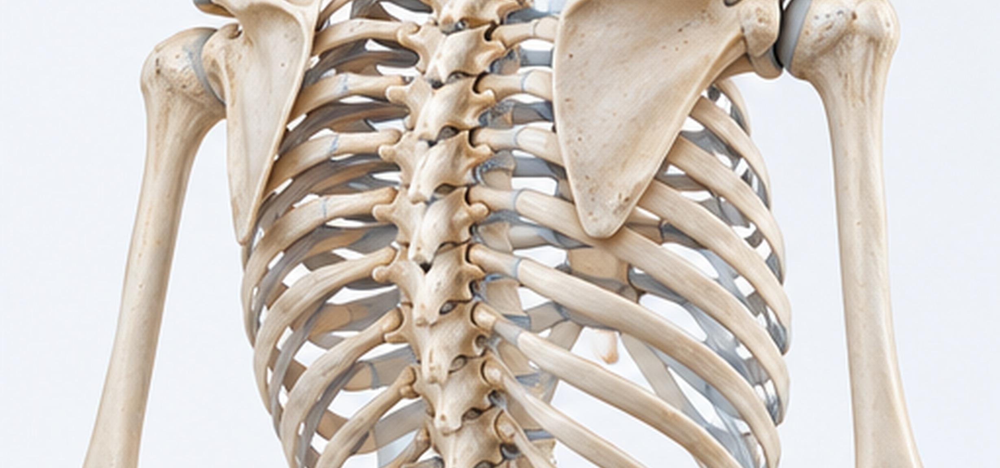
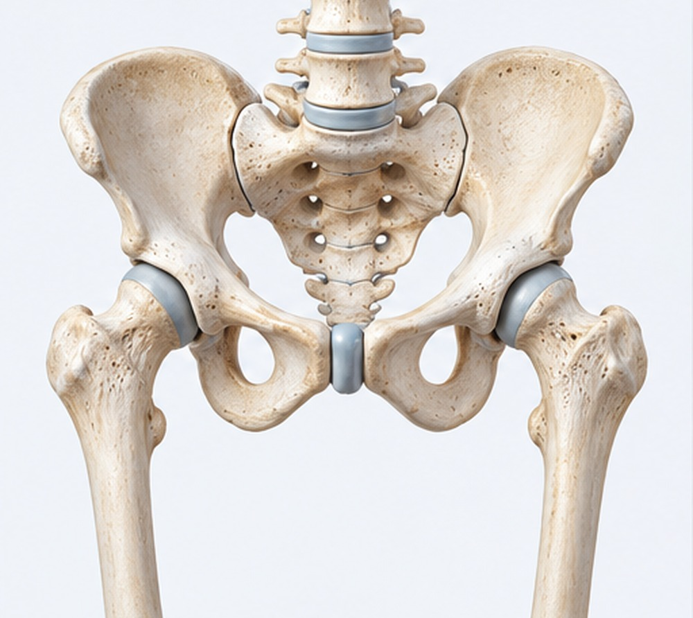
관절질환 원인
몸에서 가장 예민한 곳인 허리와 목까지 모두 아우르는 관절 질환은
타고난 원인부터 살면서 생긴 원인까지 여러 가지가 있습니다.
평소 이런 증상이 있다면
관절질환을 의심해봐야 합니다.
반월상연골파열
무릎을 다치는 가장 흔한 경우로, 무릎 관절 안의 반월상연골(meniscus)이 찢어지거나 상한 상태입니다.
반월상연골은 무릎에 오는 충격을 받아 주고, 관절이 흔들리지 않게 하며 뼈와 뼈가 맞닿아 쓸리는 것을 줄여 주는 조직입니다.
운동하다 다치거나 나이가 들며 닳아서 생기는데, 젊은 사람은 갑자기 다쳐서, 중년 이후에는 오래 써서 닳아 생기는 일이 많습니다.
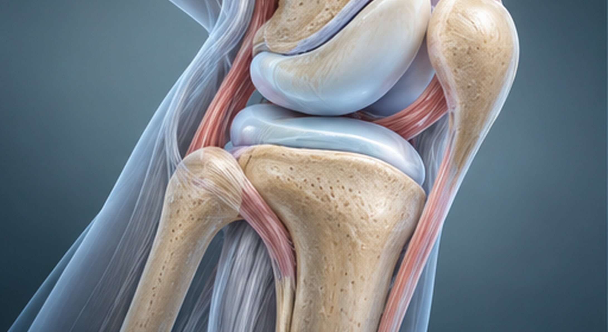
반월상연골파열의 주요증상을
확인해 보세요.
연골연화증
무릎뼈(슬개골) 뒤쪽을 덮은 연골이 약해지거나 상해서 무릎이 아파지는 상태를 말합니다.
연골은 보통 관절끼리 쓸리는 것을 줄이고 충격을 받아 주는데, 연골연화증이 생기면 연골이 탄력을 잃고 갈라지거나 닳아서 관절면이 상하고 아프거나 불편해집니다.
대개 무릎 앞쪽이 아프며, 운동이나 다친 일, 무릎을 너무 많이 쓴 것, 연골이 닳은 것이 원인이 됩니다.
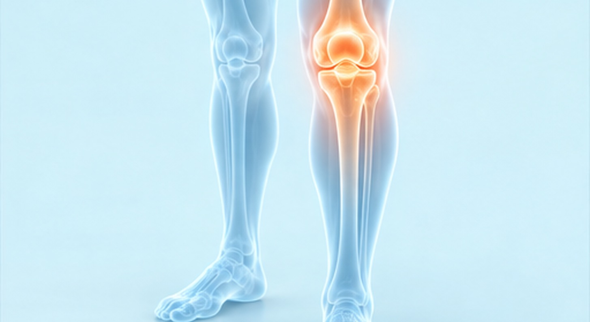
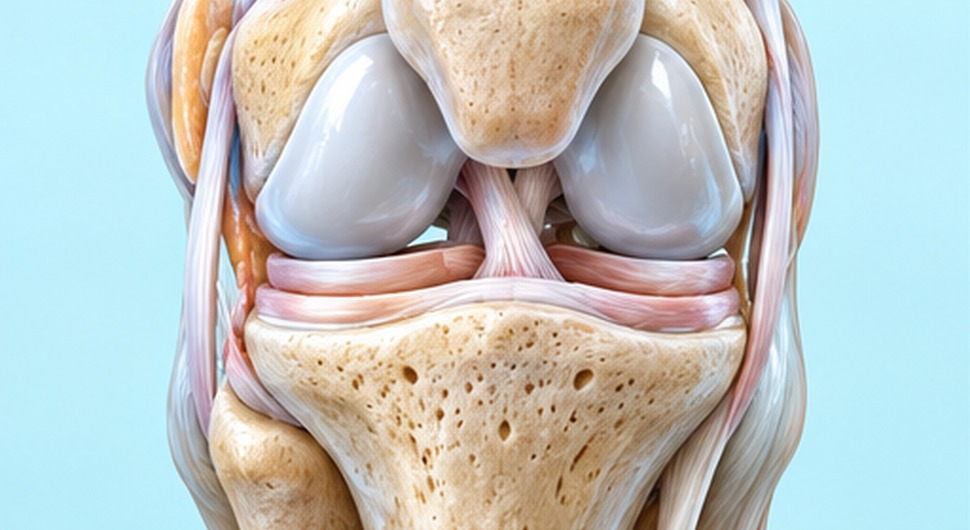
연골연화증의 주요증상을
확인해 보세요.
십자인대손상
십자인대는 무릎 관절 속에서 X자 모양으로 엇갈려 무릎이 앞뒤로 흔들리지 않게 잡아 주는 중요한 인대입니다.
전방십자인대(ACL)는 무릎 앞쪽에 있어서 갑자기 방향을 바꾸거나 몸을 비틀 때 잘 다치고, 후방십자인대(PCL)는 무릎 뒤쪽에 있어서 교통사고처럼 세게 부딪혔을 때 다치는 일이 많습니다.
십자인대파열이라고 하면 대개 전방십자인대(ACL)가 찢어진 것을 말하며, 운동하다 급히 방향을 틀거나 점프 뒤 착지할 때, 밖에서 충격을 받았을 때 많이 생깁니다.
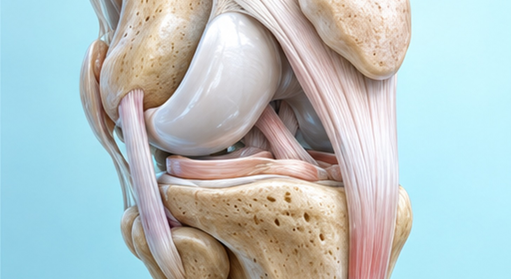
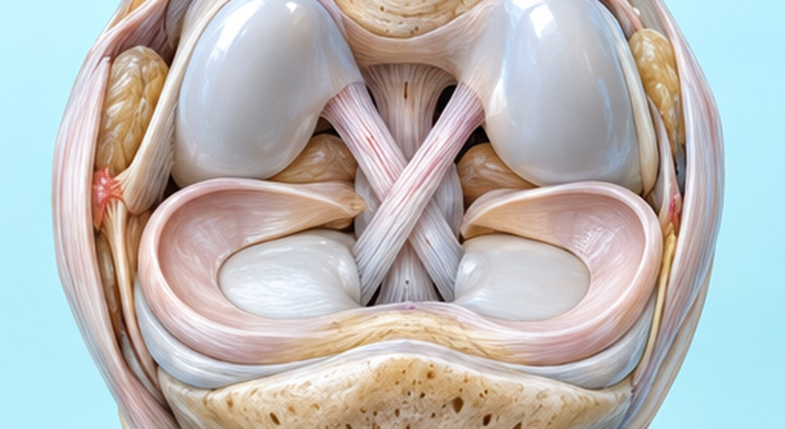
십자인대손상의 주요증상을
확인해 보세요.
슬개건염(러너스 니)
무릎뼈(슬개골) 아래에 붙은 슬개건(Patellar Tendon)에 염증이 생기는 질환으로, 뛰거나 점프를 많이 하는 운동에서 무릎을 되풀이해 쓰다 보면 생깁니다.
슬개건은 허벅지 근육(대퇴사두근)과 정강이뼈(경골)를 이어 무릎을 굽히고 펴게 돕는 힘줄로, 염증 말고도 닳거나 잘게 찢어지는 손상이 함께 있을 수 있습니다.
러너스니나 점퍼스니라는 이름으로도 부르며, 운동선수나 평소 몸을 많이 쓰는 사람에게 흔하게 생깁니다.
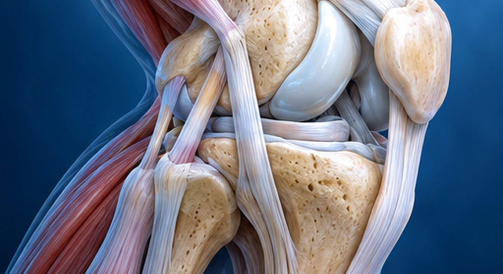
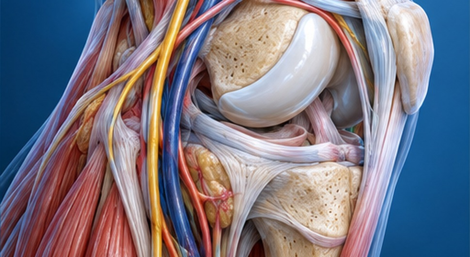
슬개건염(러너스 니)의 주요증상을
확인해 보세요.
장경인대증후군
허벅지 바깥쪽을 따라 내려가는 장경인대(iliotibial band)가 허벅지뼈 바깥쪽 튀어나온 부분과 지나치게 쓸리면서 염증과 통증이 생기는 질환입니다.
달리기나 자전거 타기, 등산처럼 무릎을 굽혔다 펴는 일이 많은 운동에서 잘 생기며, 러너스니라고도 부릅니다.
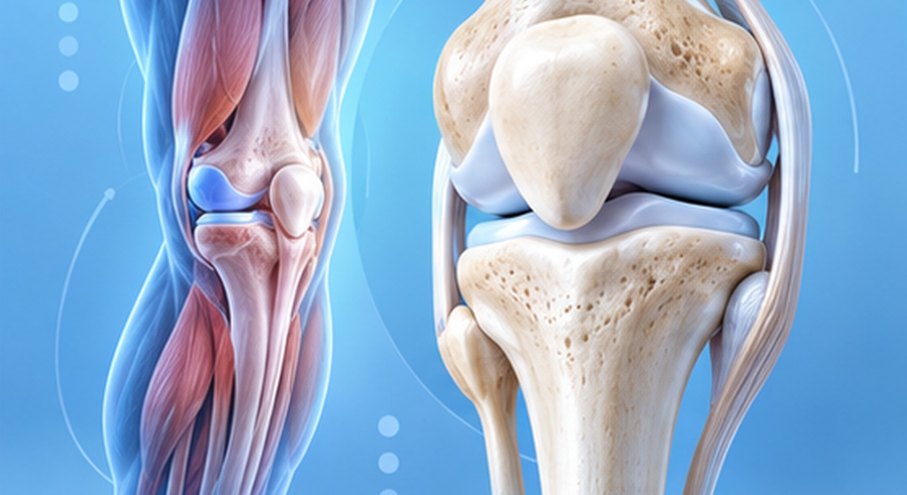
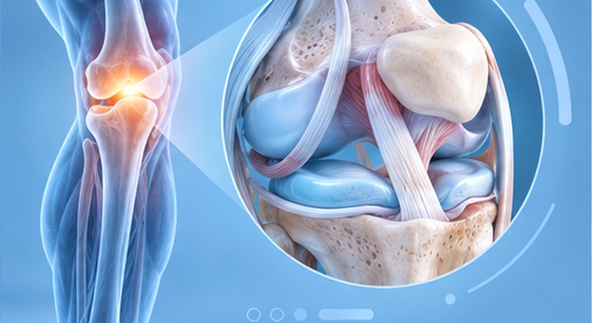
장경인대증후군의 주요증상을
확인해 보세요.
퇴행성관절염
관절을 지키고 부드럽게 움직이게 하는 연골(cartilage)이 닳아 없어지면서 관절 속 뼈끼리 쓸리고, 그 때문에 염증과 통증이 생기는 오래가는 퇴행성 질환입니다.
몸무게가 많이 실리는 무릎과 고관절, 그리고 손 관절에 잘 생기며, 나이가 들거나 살이 찌고 관절을 많이 쓰거나 다친 것이 주된 원인입니다.
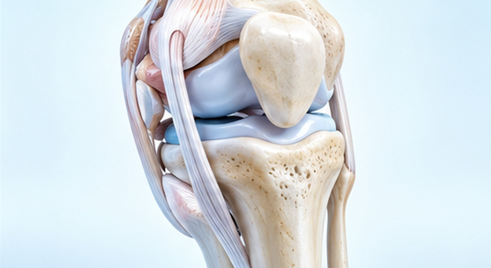
퇴행성관절염의 주요증상을
확인해 보세요.
골연골박리증
관절을 이루는 뼈와 연골 조각이 떨어져 나가면서 아프고 관절이 제대로 움직이지 않게 되는 질환입니다.
무릎이나 발목에 많이 생기며, 같은 자리에 충격이 되풀이되거나 뼈로 가는 피가 모자라면 생길 수 있습니다.
더 진행되면 떨어진 조각이 관절 안에서 돌아다니며 통증과 잠김 증상을 일으키므로 일찍 진단해서 치료해야 합니다.
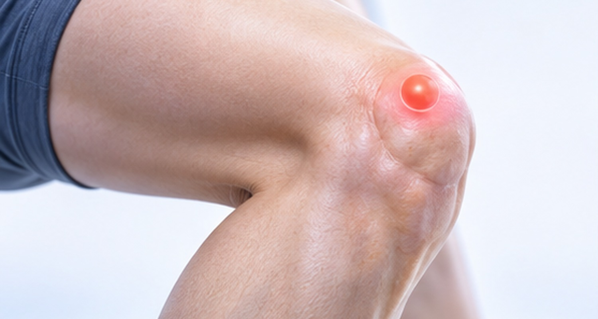
골연골박리증의 주요증상을
확인해 보세요.
추벽증후군
무릎 관절 안쪽의 얇은 막(추벽)이 자꾸 자극받아 두툼해지면서 아픔을 일으키는 질환을 말합니다.
무릎을 너무 많이 쓰거나 같은 동작을 되풀이하면 생기며, 관절 안에서 막이 쓸리면서 염증이 생깁니다.
그냥 두면 연골까지 다칠 수 있으므로 정확히 진단받고 관리하셔야 합니다.
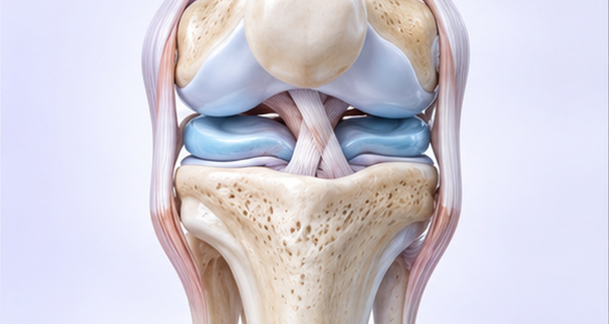
추벽증후군의 주요증상을
확인해 보세요.
석회화건염
어깨 힘줄, 그중에서도 회전근개에 석회(calcium deposits)가 쌓이고, 이 석회가 녹아 흩어지는 동안 염증과 통증이 생기는 질환입니다.
나이가 들어 힘줄이 닳거나 어깨를 너무 많이 쓰고 피가 잘 돌지 않거나 운동이 부족한 것이 주된 원인으로 꼽히며, 요즘은 20~30대에게도 늘고 있습니다.
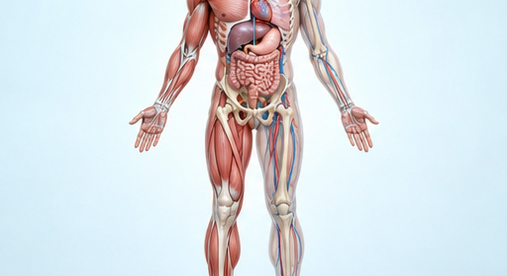
석회화건염의 주요증상을
확인해 보세요.
어깨충돌증후군
어깨 관절의 지붕처럼 덮고 있는 견봉(뼈)과 어깨를 돌리는 근육인 회전근개가 움직일 때마다 부딪치면서 통증과 염증이 생기는 질환입니다.
팔을 들어 올리는 동작을 되풀이하며 쓸리는 것이 주된 이유이며, 어깨를 너무 많이 쓰거나 자세가 바르지 않고 나이가 들어 닳은 것도 원인이 됩니다.
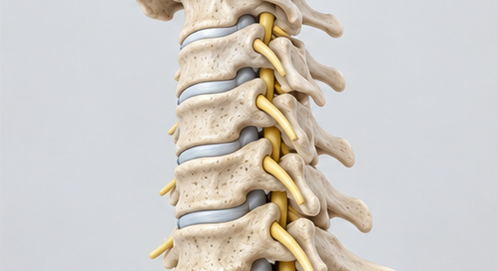
어깨충돌증후군의 주요증상을
확인해 보세요.
오십견
50대 앞뒤로 많이 생기고 어깨가 굳어 잘 움직이지 않으면서 아픈 병으로, 의학 이름은 ‘유착성 관절낭염(Adhesive Capsulitis)’입니다.
어깨 관절을 둘러싼 관절낭이 두꺼워지고 쪼그라들면서 염증과 유착이 생겨, 어깨를 움직일 수 있는 범위가 줄고 아파집니다.
대개 나이가 든 것, 어깨를 너무 많이 쓴 것, 오래 움직이지 않은 것이 원인으로 꼽힙니다.
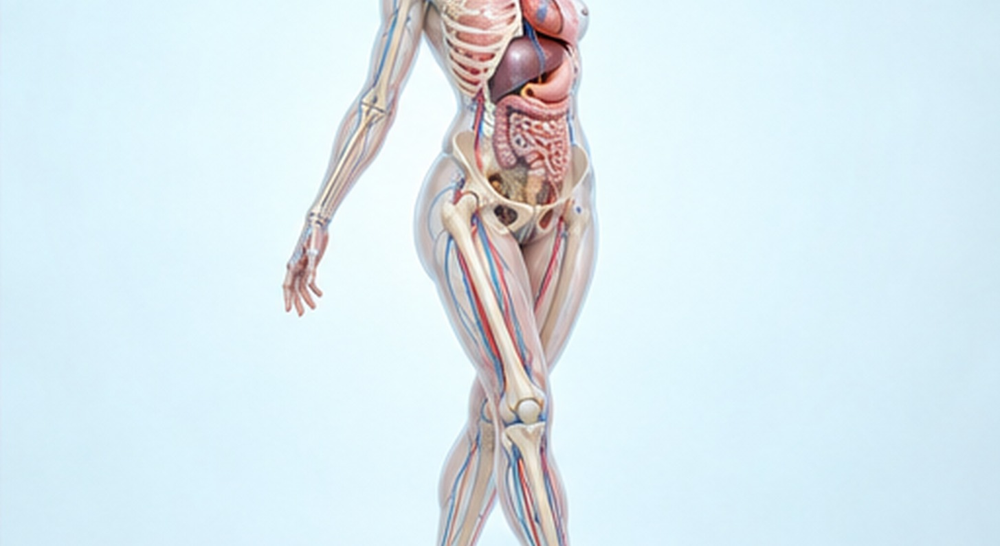
오십견의 주요증상을
확인해 보세요.
테니스엘보ㆍ골프엘보
팔꿈치 관절 둘레의 상과(epicondyle)라는 부분에 염증이 생겨 아픈 질환입니다.
테니스엘보(외측상과염): 팔꿈치 바깥쪽에 생기며, 손목을 위로 젖히는 근육(손목 신전근)을 너무 많이 써서 잘게 다친 곳에 염증과 통증이 생깁니다.
골프엘보(내측상과염): 팔꿈치 안쪽에 생기며, 손목을 안으로 굽히는 근육(손목 굴곡근)에 무리가 가서 염증이 생깁니다.
두 가지 모두 힘든 운동이나 같은 일을 너무 많이 되풀이해서 생기며, 팔꿈치에서 손목과 손가락까지 통증이 뻗칠 수 있습니다.
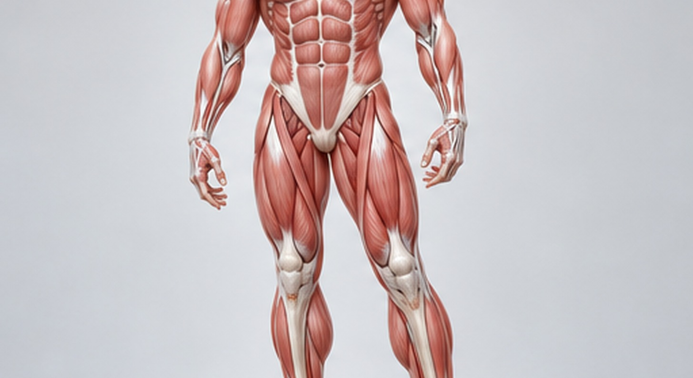
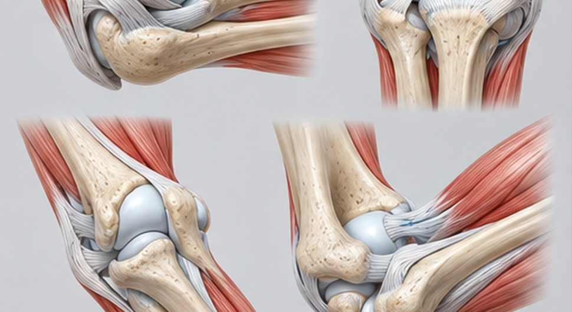
테니스엘보ㆍ골프엘보의 주요증상을
확인해 보세요.
회전근개파열
회전근개는 어깨 관절을 붙잡아 주고 팔을 돌리거나 들어 올리게 하는 힘줄 네 개(극상근, 극하근, 소원근, 견갑하근)를 묶어 부르는 이름인데,
이 가운데 하나 이상의 힘줄이 다치거나 찢어져 어깨가 아프고 잘 움직이지 않게 되는 질환입니다.
나이가 들어 닳거나 다치거나 너무 많이 쓴 것이 주된 원인이며, 오십견 환자에게 회전근개파열이 함께 있는 일도 흔합니다.
*조금 찢어진 경우에는 거의 아프지 않거나 증상이 없을 수도 있음
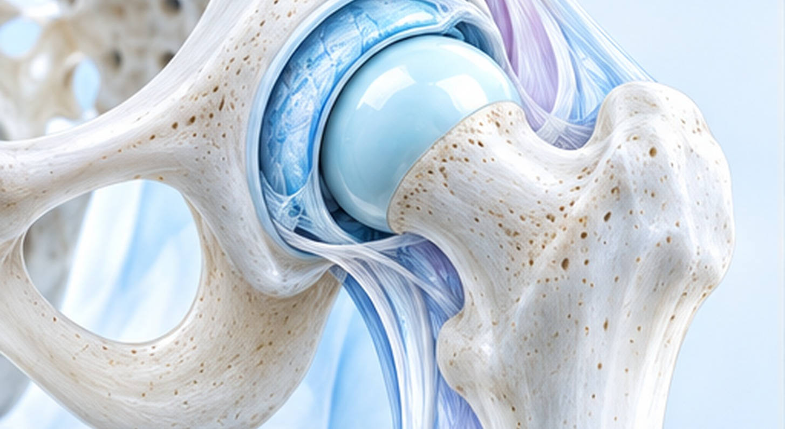
회전근개파열의 주요증상을
확인해 보세요.
견갑골 불안정성
어깨가 잘 움직이고 흔들리지 않게 받쳐 주는 날개뼈(견갑골, scapula)가 제자리를 잡지 못하고 이상하게 움직이는 상태입니다.
어깨를 받치고 움직이는 근육, 특히 승모근·능형근·전거근이 약해지거나 다쳐서 생기며, 어깨를 너무 많이 쓰거나 다친 것, 신경이 상한 것이 주된 원인입니다.
날개뼈가 불안정하면 어깨가 아프고 잘 움직이지 않으며, 오래되면 관절까지 상할 수 있습니다.
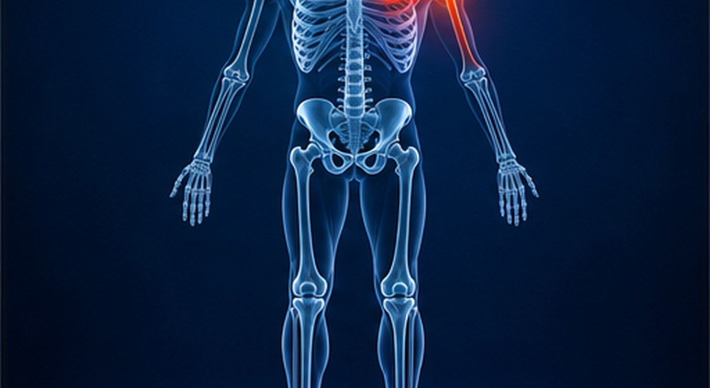
견갑골 불안정성의 주요증상을
확인해 보세요.
슬랩병변
어깨 관절 가장자리를 둘러싼 섬유질 연골인 관절와순이 찢어진 것으로, 팔을 되풀이해 쓰는 운동을 하거나 다쳤을 때 주로 생기는 질환입니다.
야구나 테니스처럼 팔을 머리 위로 휘두르는 동작이 많은 운동에서 특히 흔합니다.
그냥 두면 어깨가 불안정해지고 통증이 오래갈 수 있습니다.
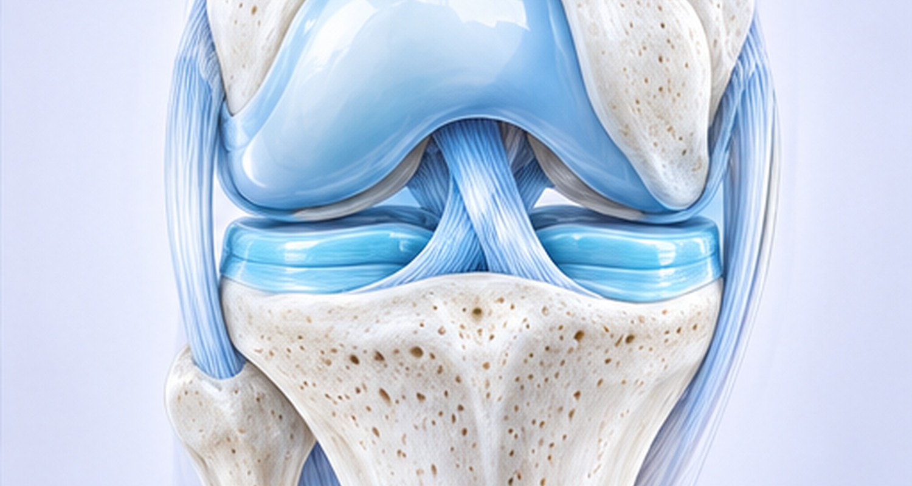
슬랩병변의 주요증상을
확인해 보세요.
재발성탈구
어깨 관절이 자꾸 빠지는 상태로, 처음 빠진 뒤 관절이 약해지면서 계속 되풀이되는 질환입니다.
다치거나 운동하다가 생기는 일이 많고, 관절순이나 인대가 함께 다친 경우가 흔합니다.
빠지는 일이 되풀이될수록 관절이 더 상할 수 있어서 적극적으로 치료해야 합니다.
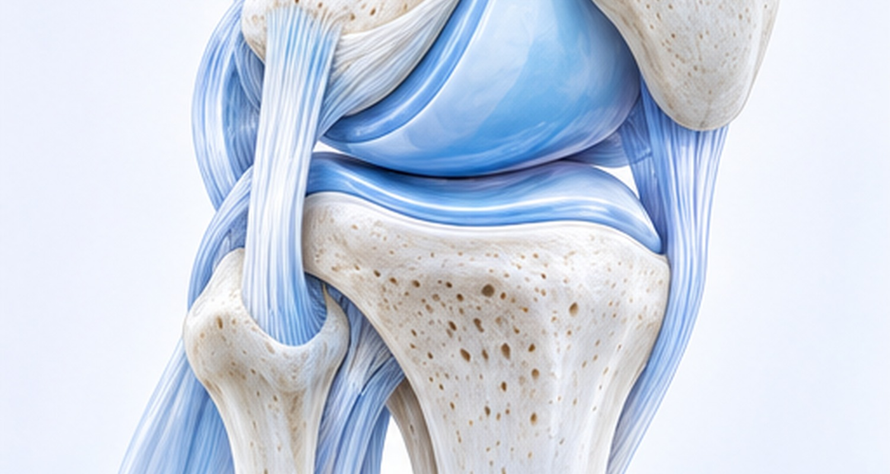
재발성탈구의 주요증상을
확인해 보세요.
척골신경포착증후군
팔꿈치 안쪽을 지나는 척골신경이 눌려 손이 저리고 감각이 이상해지는 질환입니다.
팔꿈치를 오래 굽히고 있는 버릇이나 같은 자리가 자꾸 눌리는 것이 원인입니다.
더 진행되면 손에 힘이 빠질 수 있으므로 일찍 치료하는 것이 좋습니다.
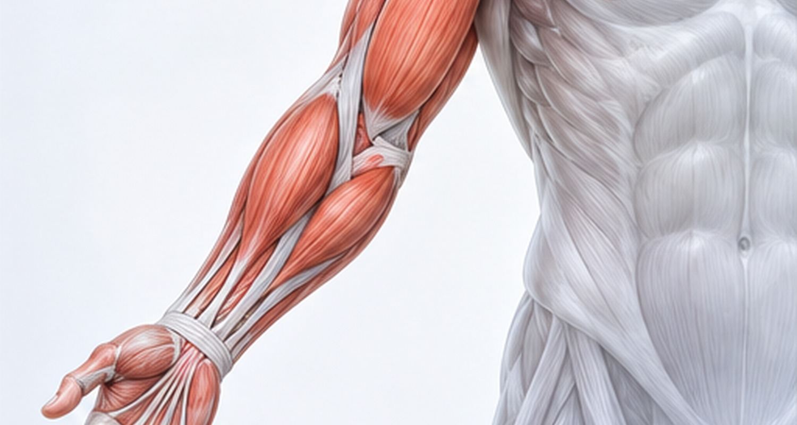
척골신경포착증후군의 주요증상을
확인해 보세요.
방아쇠수지
손가락을 움직이는 힘줄과 그것을 감싼 건초에 염증이 생기고 좁아져서, 굽힌 손가락이 잘 펴지지 않는 질환입니다.
손가락을 펼 때 "딸깍" 소리가 나거나 걸리는 느낌이 들고, 심하면 손가락이 끝까지 펴지지 않은 채로 굳어 버릴 수 있습니다.
손을 되풀이해서 쓰거나 손가락을 너무 많이 쓴 것이 주된 원인이며, 손바닥의 어느 한 곳(힘줄 결절)이 아프고 누르면 더 아픕니다.
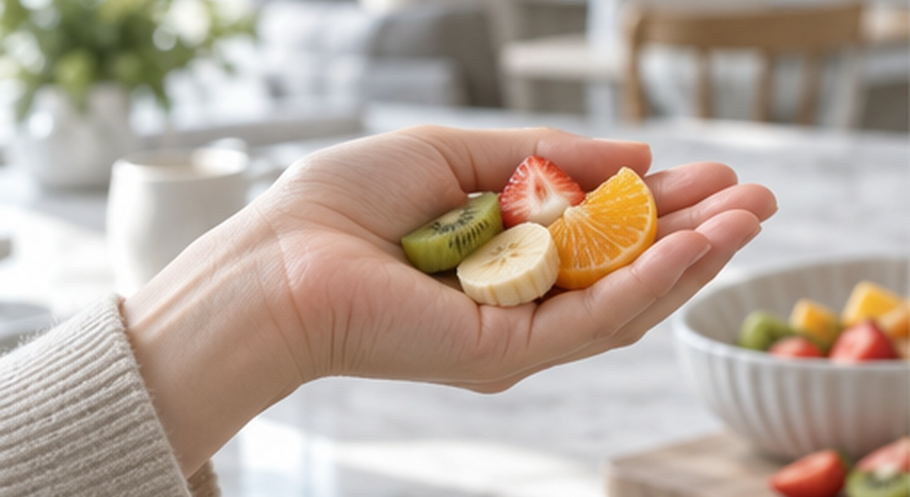
방아쇠수지의 주요증상을
확인해 보세요.
류마티스 관절염
류마티스 관절염은 면역 체계가 잘못해서 제 관절을 공격하는 자가면역 질환으로, 염증이 오래가면서 연골과 뼈까지 상하게 합니다.
손과 손목, 발처럼 작은 관절에 양쪽이 똑같이 생기는 일이 많고, 시간이 지나면 관절 모양이 변하고 기능이 떨어질 수 있습니다.
염증이 온몸으로 번지면 관절 말고도 폐나 심장, 눈 같은 여러 기관에 문제가 생길 수 있습니다.
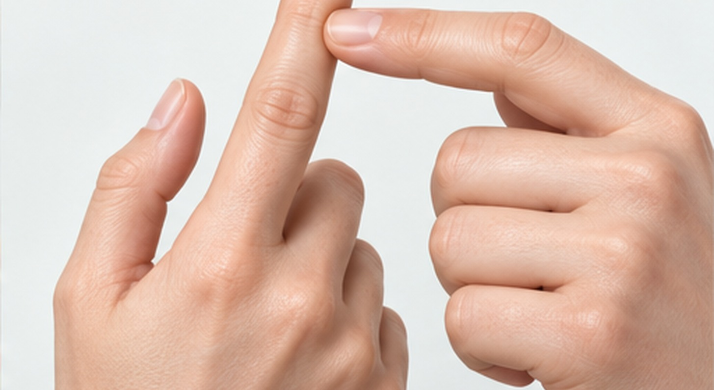
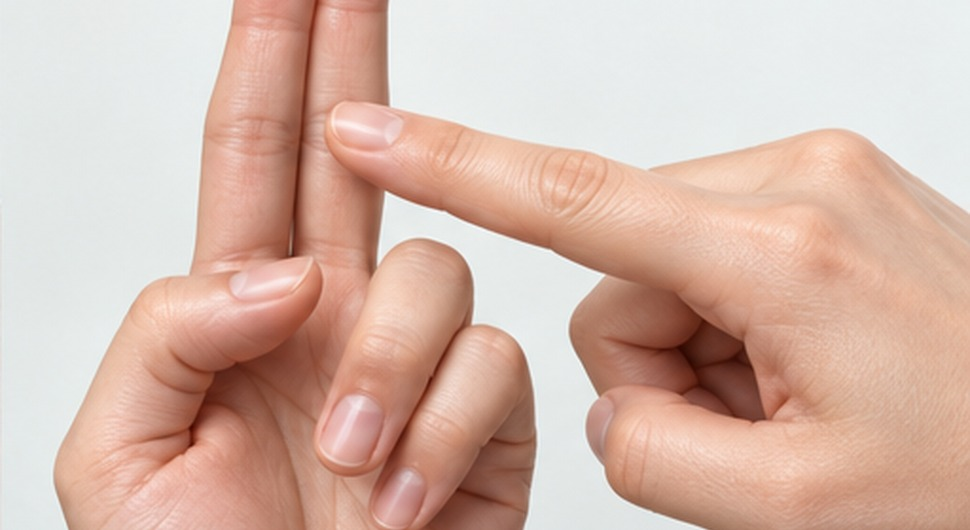
류마티스 관절염의 주요증상을
확인해 보세요.
건초염
힘줄을 둘러싼 건초(sheath)에 염증이 생기는 질환으로, 같은 동작을 너무 많이 되풀이하거나 다치거나 균에 감염되어 생깁니다.
건초는 힘줄이 매끄럽게 움직이게 돕는데, 여기에 염증이 생기면 힘줄이 잘 움직이지 않고 아프며 붓습니다.
손목과 손가락, 발목처럼 자주 쓰는 관절에 잘 생기며, 평소 하는 동작에서도 불편함을 느끼게 됩니다.
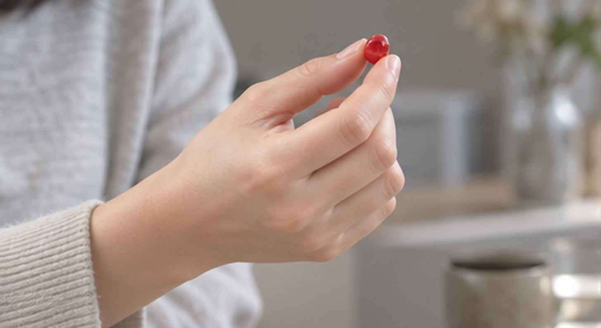
건초염의 주요증상을
확인해 보세요.
손목터널증후군
손목터널(carpal tunnel)이라는 좁은 통로가 더 좁아지거나 그 속 압력이 올라가면, 지나가던 정중신경(median nerve)이 눌려 생기는 병입니다.
손목터널은 뼈와 인대로 둘러싸인 통로로, 그 안으로 손가락을 굽히는 힘줄과 정중신경이 지나갑니다. 이 터널이 좁아지면 손바닥과 엄지·검지·중지, 넷째 손가락 일부가 저리고 아파집니다.
손목을 굽힌 채 양쪽 손등을 맞대고 있을 때 1분 안에 저려 온다면 손목터널증후군일 수 있습니다.
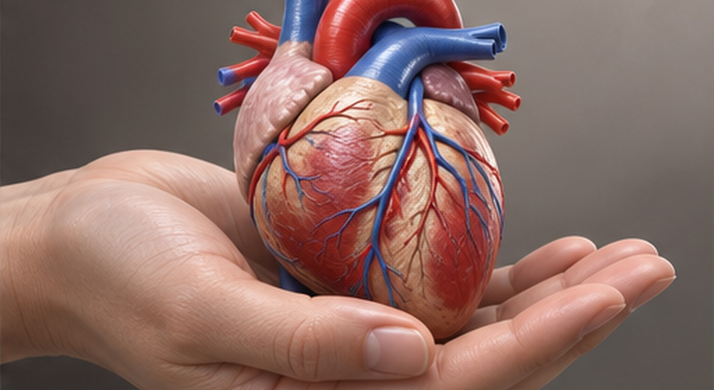
손목터널증후군의 주요증상을
확인해 보세요.
무지외반증
엄지발가락이 둘째 발가락 쪽으로 휘고, 엄지발가락 관절이 바깥으로 튀어나오면서 아파지는 질환입니다.
튀어나온 관절이 좁거나 굽 높은 신발에 계속 눌리고 쓸리면서 염증과 통증이 생기며, 엑스레이에서 엄지발가락이 15도 넘게 휘어 있으면 이 질환으로 진단합니다.
그냥 두면 관절이 빠지거나 더 휘어 발가락 관절염까지 생길 수 있으니 일찍 진단받고 치료해야 합니다.
무지외반증의 주요증상을
확인해 보세요.
발목손상
발목을 이루는 인대·연골·관절 가운데 어딘가가 다친 것을 발목손상이라 하며, 삔 발목(염좌), 연골손상, 불안정증이나 관절염 같은 모습으로 나타납니다.
발목염좌 - 발목을 삐끗해서 인대가 늘어나거나 찢어진 상태로, 제대로 치료하지 않으면 연골이 상하거나 발목이 계속 흔들리게 될 수 있습니다.
발목연골손상 - 발목 관절 표면의 연골이 다쳐 떨어져 나간 상태로, 통증과 붓기가 오래 이어집니다.
발목불안정증 - 발목 인대가 찢어진 뒤 제대로 낫지 않아 발목을 자꾸 접질리는 상태입니다.
발목관절염 - 발목 관절에 염증이 생겨 붓고 많이 아프며, 관절 모양이 바뀌어 제대로 걷기 힘들어지는 질환입니다.
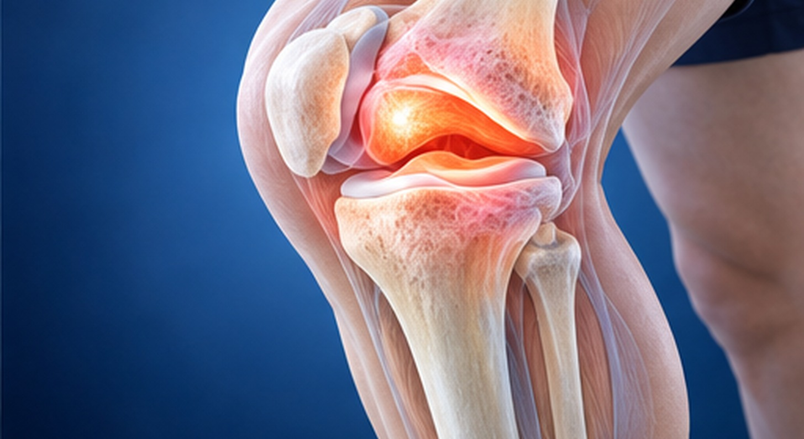
발목손상의 주요증상을
확인해 보세요.
족저근막염
발뒤꿈치에서 시작해 발바닥을 따라 발가락 뿌리까지 이어진 족저근막에 잘게 다친 곳이 되풀이해 생기고 염증이 생기는 질환입니다.
족저근막은 발바닥의 아치를 받쳐 주고 충격을 받아 주는 일을 하는데, 발을 너무 많이 쓰거나 발바닥을 제대로 받쳐 주지 못하면 콜라겐이 변하고 염증과 붓기가 생깁니다. 그래서 발뒤꿈치와 발바닥이 아파집니다.
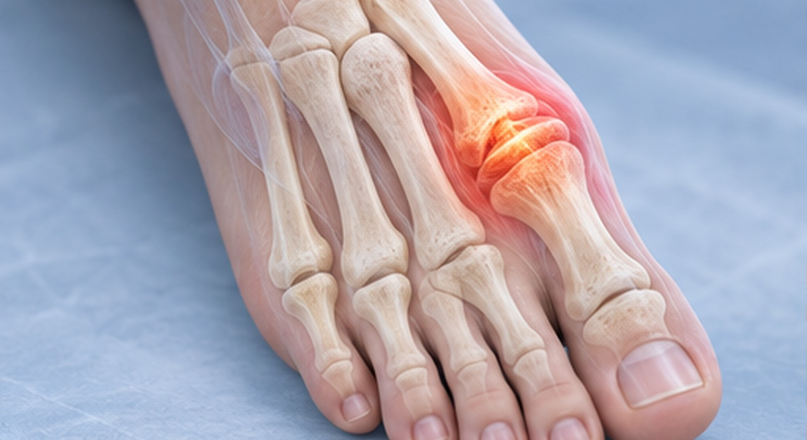
족저근막염의 주요증상을
확인해 보세요.
아킬레스건염
발뒤꿈치와 종아리를 잇는 아킬레스건에 부담이 계속 쌓이면서 잘게 다치고 염증이 생기는 질환입니다.
아킬레스건은 달리기와 점프처럼 발목을 쓰는 운동에서 큰 몫을 하지만, 너무 많이 쓰거나 갑자기 충격을 받으면 염증과 통증이 생길 수 있습니다. 운동선수나 몸을 많이 움직이는 사람에게 흔합니다.
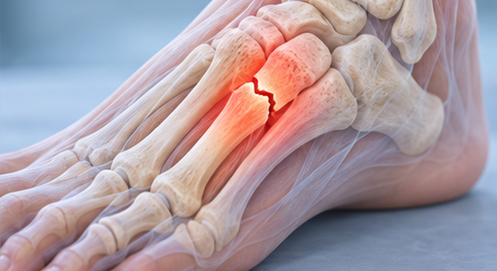
아킬레스건염의 주요증상을
확인해 보세요.
통풍성 관절염
피 속 요산이 많아져 요산 결정이 관절과 둘레 조직에 쌓이면서 생기는 염증 질환입니다.
엄지발가락 관절에 가장 많이 생기지만, 발목과 무릎, 손가락 같은 다른 관절에도 생길 수 있습니다.
갑자기 도지면 몹시 아프고 붓기가 심하며, 오래가면 관절 모양이 바뀌고 기능이 떨어질 수 있습니다.
먹는 습관과 집안 내력, 몸의 대사 이상이 주요 위험 요인입니다.
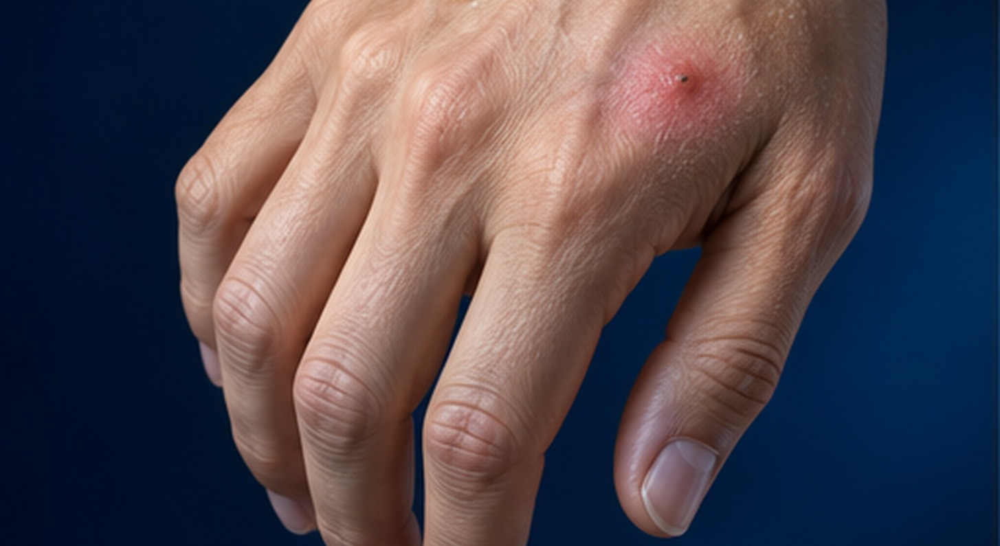
통풍성 관절염의 주요증상을
확인해 보세요.
고관절충돌증후군
고관절을 이루는 뼈가 제대로 맞물리지 않아 움직일 때마다 서로 부딪치는 질환입니다.
그 때문에 연골이나 관절순이 다치고 아프며 움직이기 힘들어집니다.
젊은 나이에도 생길 수 있으니 일찍 치료하는 것이 좋습니다.
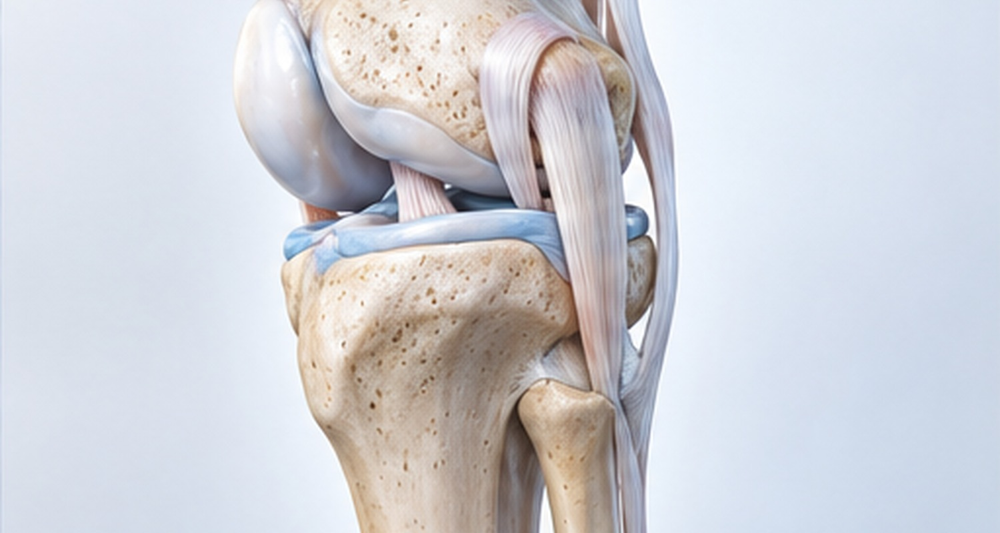
고관절충돌증후군의 주요증상을
확인해 보세요.
무혈성괴사
뼈로 가는 피가 막혀 뼈 조직이 죽는 질환으로, 대부분 고관절에 생깁니다.
처음에는 거의 증상이 없지만, 진행되면 관절이 무너지고 몹시 아플 수 있습니다.
일찍 찾아내는 것이 아주 중요합니다.
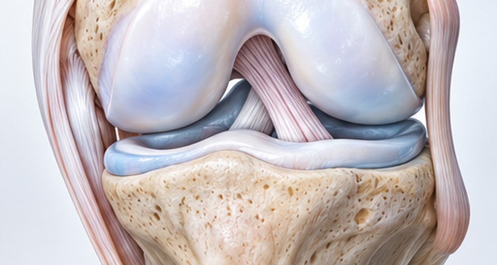
무혈성괴사의 주요증상을
확인해 보세요.
고관절이형성증
고관절 뼈가 정상보다 얕거나 불안정하게 생겨 넓적다리뼈 머리가 잘 맞물리지 못하는 질환입니다.
태어날 때부터 있는 경우가 많고, 그냥 두면 이른 나이에 관절염이 될 수 있습니다.
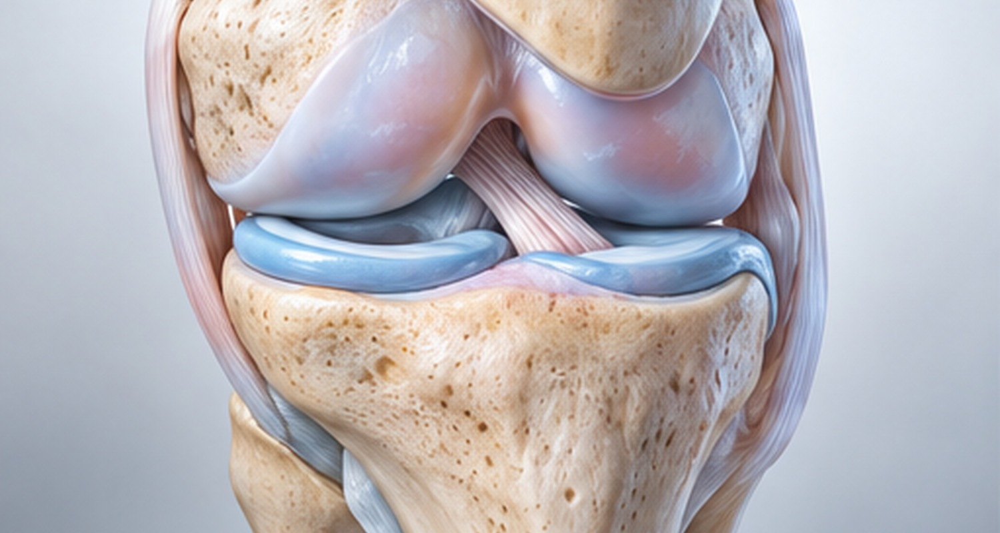
고관절이형성증의 주요증상을
확인해 보세요.
고관절관절염
고관절 연골이 조금씩 닳아 없어지면서 아프고 잘 움직이지 않게 되는 퇴행성 질환입니다.
나이가 드는 것 말고도 다친 일이나 비만, 구조 이상이 원인이 될 수 있습니다.
고관절관절염의 주요증상을
확인해 보세요.
발음성고관절증후군
힘줄이나 근육이 뼈 위를 스치고 지나가면서 고관절을 움직일 때마다 ‘뚝’, ‘딱’ 하는 소리가 나는 질환입니다.
대개 크게 걱정할 일은 아니지만 아프기까지 하다면 치료를 받아야 합니다.
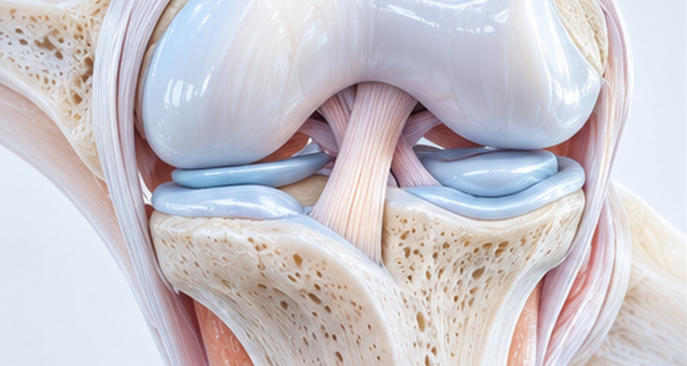
발음성고관절증후군의 주요증상을
확인해 보세요.